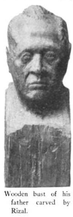
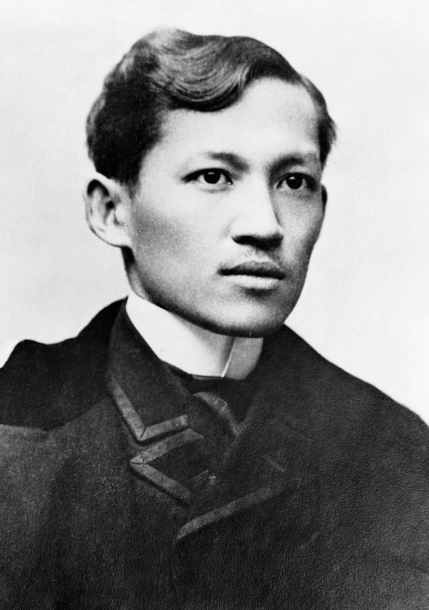
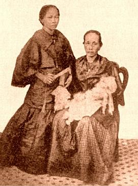
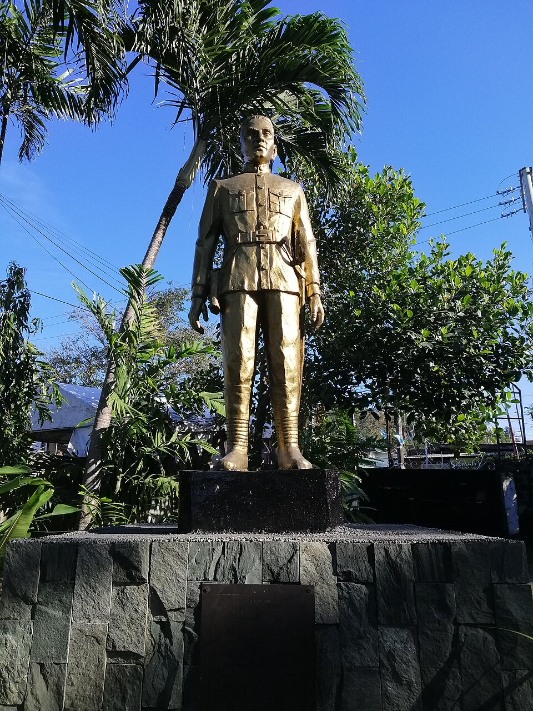
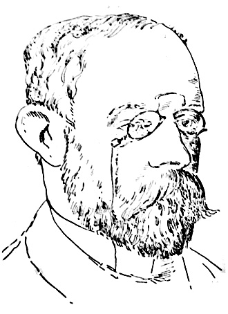
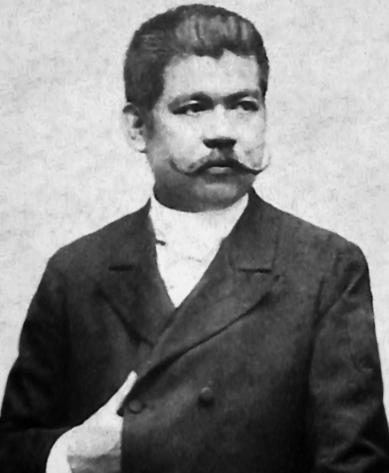
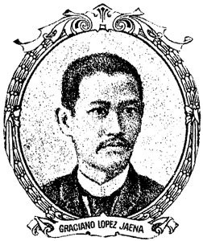
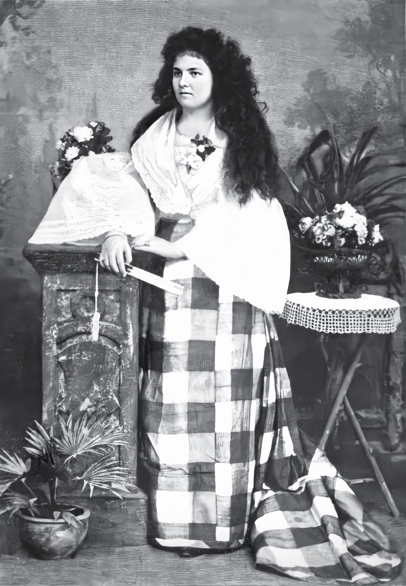
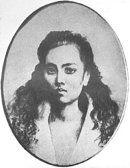
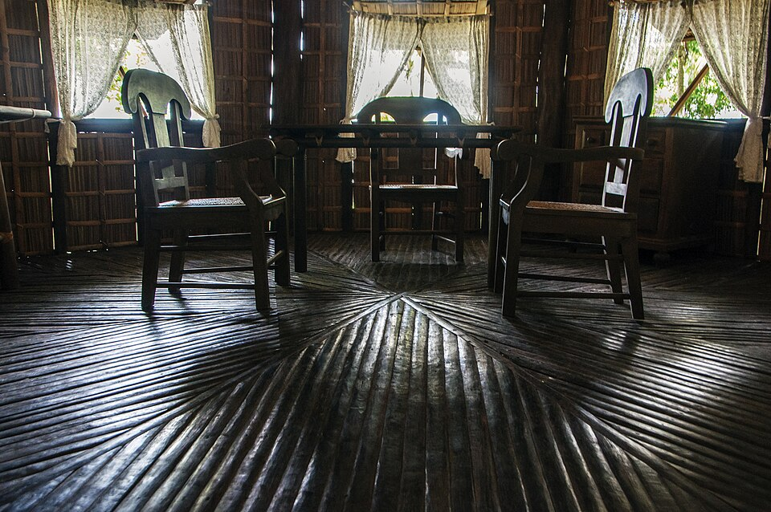

Father · 1818–1898
Francisco Mercado
A farmer and community leader in Calamba, Francisco supported his children’s education. Rizal carved a wooden bust of his father, pictured here.
A life in motion
Follow the journey of a student, traveler, writer, and reformer, with more about the people and events that shaped his life.
José Protacio Rizal Mercado y Alonso Realonda was born on June 19 in Calamba, Laguna, to Francisco Mercado and Teodora Alonso.

After early schooling at home and in Biñan, Rizal studied at the Ateneo Municipal de Manila and the University of Santo Tomas.
Rizal continued his medical studies in Madrid and traveled around Europe, meeting fellow reformists and observing life beyond the Philippines.
Noli Me Tangere appeared in 1887 and El Filibusterismo followed in 1891. Both criticized colonial abuses and called attention to Filipino society.
After returning to the Philippines, Rizal was exiled to Dapitan in Mindanao. There he practiced medicine, taught, and worked on community projects.
Rizal was executed by firing squad on December 30 at Bagumbayan (now Luneta/Rizal Park) in Manila. His death strengthened the movement for independence.
Learning across continents
Rizal began learning at home, where his mother, Teodora Alonso, was among his first teachers. He attended school in Biñan before enrolling at the Ateneo Municipal de Manila in 1872. He earned a Bachelor of Arts degree in 1877, then studied philosophy and medicine at the University of Santo Tomas.
In 1882 he left for Spain and continued his medical studies at the Universidad Central de Madrid, earning a medical degree in 1884. He also studied ophthalmology in Paris and Heidelberg, including training with specialists in treating eye disease.
The Mercado–Alonso family
José was the seventh of eleven children. His parents and siblings lived in Calamba, where the family managed agricultural land and placed a strong value on learning.

Father · 1818–1898
A farmer and community leader in Calamba, Francisco supported his children’s education. Rizal carved a wooden bust of his father, pictured here.
Mother · 1827–1911
Rizal’s first teacher at home, Teodora taught him to read and encouraged his early studies. She was well-read and strongly influenced his education.
A historical portrait is available in the Wikimedia Commons collection.
Mother’s brother
Rizal’s uncle Gregorio encouraged his interest in reading and books, helping nurture the young boy’s love of study.
No verified portrait located.
Mother’s brother
Uncle Manuel encouraged Rizal to strengthen his health through physical exercise and outdoor activities.
No verified portrait located.
Family, friends, and fellow reformers

Parents · Calamba
Rizal’s parents encouraged his education and shaped his early life in Calamba.

Older brother · 1851–1930
His older brother and trusted adviser, who helped Rizal pursue schooling and travel.

Scholar & correspondent · 1853–1913
An Austrian scholar and close correspondent who shared Rizal’s interest in Philippine history and culture.

Reformist & journalist · 1850–1896
A leading figure of the Propaganda Movement and editor of La Solidaridad, he worked alongside Rizal for reform.

Orator & reformist · 1856–1896
A gifted speaker and fellow reformist in Europe, associated with the Propaganda Movement and La Solidaridad.

Partner · Dapitan
Rizal’s partner, whom he met during his exile in Dapitan.
Jesuit priest · Dapitan correspondence
A Jesuit priest in Dapitan who corresponded with Rizal about religion and belief.
No verified portrait located for this gallery.
Personal connections
Later biographies often discuss these seven women in connection with Rizal. The relationships were not all alike: some were youthful affections or reported courtships, while Leonor Rivera and Josephine Bracken were especially significant partners. The written record is uneven, so brief or disputed connections are described cautiously.
Biñan · 1870s
Often described as Rizal’s first youthful affection. They met while he was studying in Biñan. Their attachment did not develop into a lasting relationship; Katigbak later married Manuel Luz.
No verified portrait located for this gallery.
Manila · early 1880s
Known as “Orang,” she lived near Rizal while he was a student in Manila. Accounts describe a brief courtship and letters exchanged between them.
No verified portrait located for this gallery.

Manila & Europe · 1870s–1890s
Rizal’s cousin and long-time sweetheart. Their relationship was sustained through letters while he studied abroad. Rivera later married English railway engineer Henry Kipping.
Madrid · mid-1880s
Rizal met Ortiga y Rey in Madrid and wrote poetry connected with his admiration for her. His diary suggests affection, but the connection did not become a lasting partnership.
No verified portrait located for this gallery.
London · 1888
Rizal stayed with the Beckett family while in London. Later accounts describe Gertrude’s affection for him; he left London to continue his work in Paris.
No verified portrait located for this gallery.
Brussels · 1890
Rizal lodged with the Jacoby family in Brussels. Some biographies report a brief romantic attachment with Suzanne, though accounts differ about its depth.
No verified portrait located for this gallery.
Dapitan · 1895–1896
Bracken met Rizal in Dapitan in 1895, and they became partners during his exile. Claims about a formal marriage shortly before his execution are tied to the disputed retraction and remain debated.
Departures and returns
Mindanao · 1892–1896
Rizal spent almost four years in Dapitan, in present-day Zamboanga del Norte. Exile restricted his movement, but he continued to serve the community: he treated patients, taught local boys, worked on water and farming projects, and pursued scientific interests.

He met Josephine Bracken there. During this period he also exchanged letters with Fr. Pablo Pastells, including discussions about religion that later became relevant to debate over the retraction attributed to Rizal.
Manila · December 1896
After leaving Dapitan on his way to serve as a doctor in Cuba, Rizal was arrested and brought back to Manila. A military court tried him for rebellion, sedition, and conspiracy. He was found guilty and sentenced to death.
On December 30, 1896, Rizal was executed by firing squad at Bagumbayan, now part of Rizal Park in Manila. His farewell poem, Mi Último Adiós, is associated with his final hours. His sisters recovered his body, which was first buried at Paco Cemetery.
A debated document and an enduring legacy
A document dated December 29, 1896, and presented as Rizal’s retraction of some religious statements and his Masonic affiliation, has been the subject of historical debate. Some accounts accept it as genuine; others question its provenance or how it has been interpreted. It is best presented as a disputed question, not as a settled fact.
Rizal’s execution became a powerful symbol in the growing movement against Spanish rule. In 1912, his remains were transferred from Paco Cemetery and placed beneath the Rizal Monument in Luneta. His writings and life continue to be studied, and December 30 is commemorated as Rizal Day in the Philippines.
For further reading on the retraction, compare primary documents and scholarly interpretations; see the Sources page.